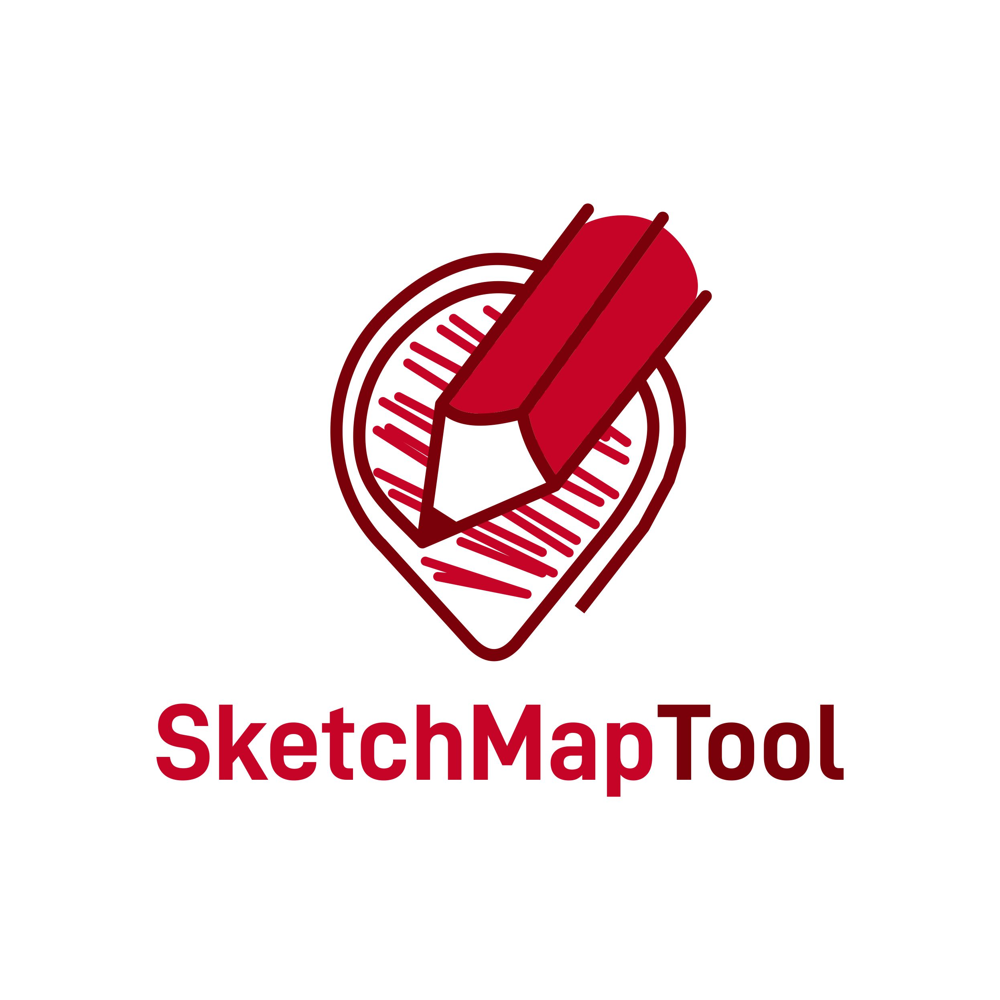
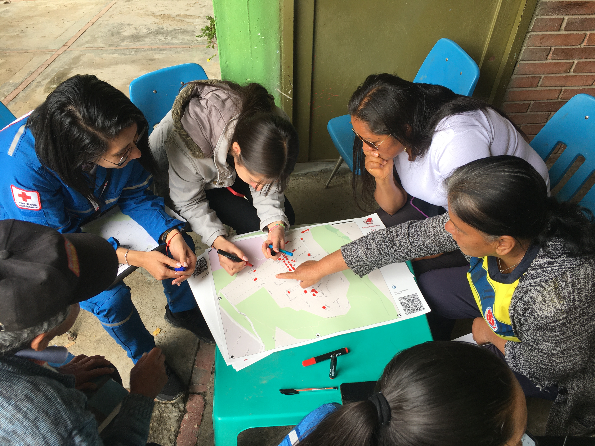

Sketch Map Tool#
What is the Sketch Map Tool?#
{kind=link}

Sketch Map Tool Logo#
The Sketch Map Tool simplifies participatory mapping, by facilitating the creation and digitisation of paper-based maps, the so-called Sketch Maps. This low-tech solution enables the offline collection of local knowledge and perceptions with pen and paper maps. Every SketchMap contains a basemap with OpenStreetMap data or satellite imagery, which provides a scale and orientation to the user. Upon uploading pictures of marked maps, the tool automatically digitizes and georeferences the markings to download and integrate into Geographic Information Systems. The Sketch Map Tool combines widely used, analogue mapping with digital analysis, fosters community involvement and the usability of gained results.
What is a Sketch Map?#
Satellite imagery |
OSM data |
|
|---|---|---|
Data source |
||
Example map |
|
|
Currentness |
The satellite imagery is typically within 3-5 years of currency. |
Current OSM-data is used in the base map. |
Biggest benefit |
Impression of the landscape and topography |
Clear outlines and at times labels especially of important infrastructure e.g. hospitals, possibility to improve the map by contributing to OSM. |
Introduction in the Workflow Sketch Map Tool#

Sketch Map Tool workflow#
The Sketch Map Tool and its use in the EVCA#
The Enhanced Vulnerability and Capacity Assessment (EVCA) is a participatory process developed for communities to become more resilient through the assessment and analysis of the risks they face and the identification of actions to reduce these risks. The EVCA guidelines contains different tools in order to help National Societies to understand the dynamics of risk in a specific community. In order to spatially assess and identify risk factors, the EVCA recommends to conduct a mapping activity throughout the process where community members jointly create a spatial map, hazard & exposure map and vulnerability & capacity map. Mapping is done with paper and pen and generally on blank paper. The Sketch Map Tool has great potential to support a sustainable participatory mapping process by digitising the process while, at the same time, keeping it simple.
{kind=link}

Usage of Sketch Map Tool in the context of the Enhanced Vulnerability and Capacity Assessment (EVCA) in Colombia#
For more information on the EVCA:
Sketch Map Tool for digitisation of community mapping in the EVCA process: As part of the efforts to digitize the EVCA Process, we prepared a customized training package on the Sketch Map Tool for digitisation of community mapping, that can be used by trainers throughout the regional EVCA Training of Trainers workshops.
Digitising Paper-Based Community mapping in the EVCA: Case Study on the SKetch Map Tool in action for Disaster Risk Reduction Activities in Colombia.
For gaining experiences on the use of the Sketch Map Tool: